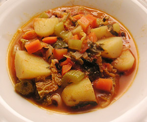

Zuppa di Ribollita (Minestrone)
5 von 6zwiebeln, karotten, stangensellerie, basilkum und peterli fein schneiden und in olivenöl andünsten. die am vortag eingelegten, und gekochten toscanelli-bohnen samt dem kochwasser beigeben. eine büchse pellati, gewürfelte kartoffeln und wirsing (kohl) darunter mischen. kochen bis die kartoffeln weich sind, ev. wasser nachgiessen. mit salz, pfeffer, muskat und etwas bouillon abschmecken.
